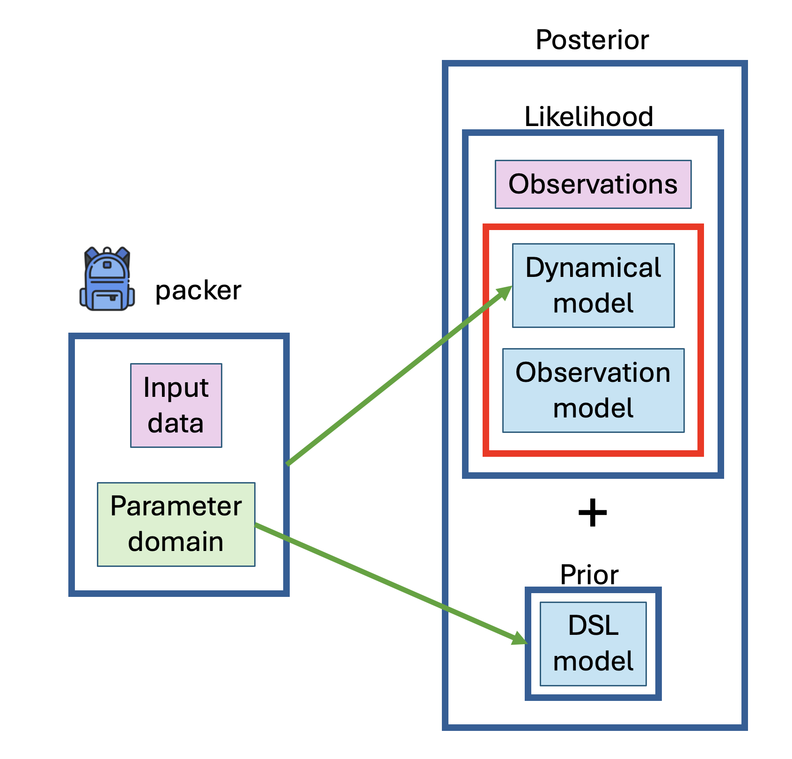
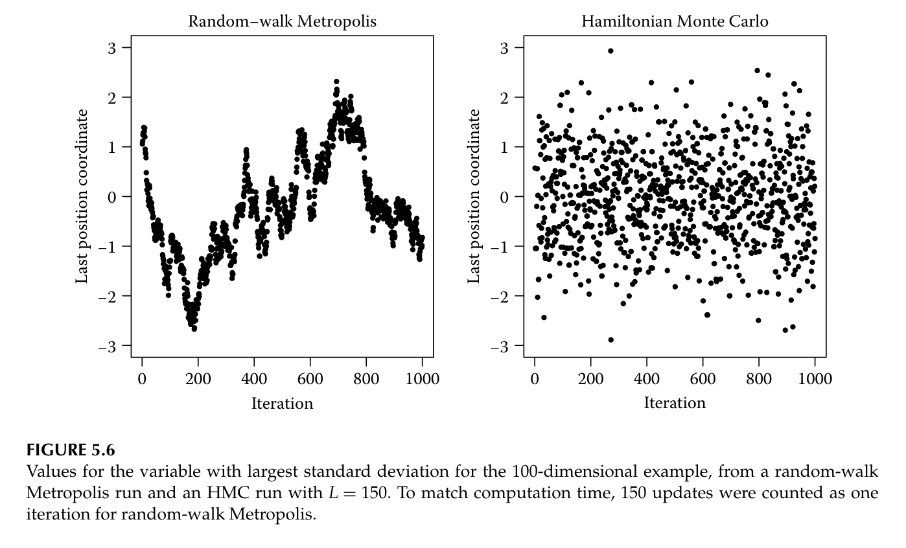
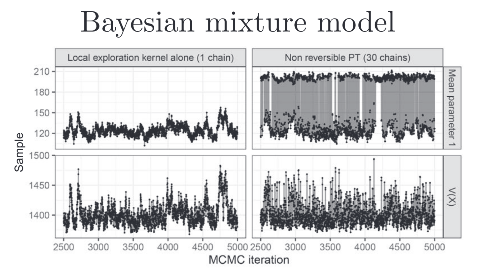
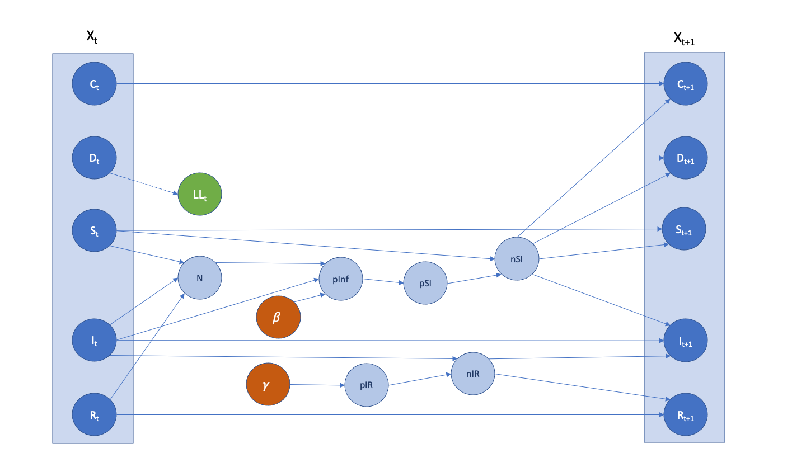

MRC Centre for Global Infectious Disease Analysis, Imperial College London
2025-02-13
odin created to integrate ODEs (e.g. for compartmental models) in R with a domain-specific language (DSL)mcstate and dust emerged during the COVID-19 pandemicdust and mcstateodinDesign of a new architecture, rewiring data, model and parameters
Design of a new interface
Development of automatic differentiation algorithms

monty models can be built from
odin and datamonty modelmontymonty: A framework to handle statistical models (defined by their domain and density)odin and monty “collaborate” but remain independent


dt <- 1.0 / freq
p_IR <- 1 - exp(-(gamma) * dt)
S0 <- 1000
freq <- user(4)
N <- S + I + R
p_inf <- beta * I / N * dt
p_SI <- 1 - exp(-(p_inf))
n_SI <- S * p_SI
n_IR <- I * p_IR
update(time) <- (step + 1) * dt
update(S) <- S - n_SI
update(I) <- I + n_SI - n_IR
update(R) <- R + n_IR
update(cases_cumul) <- cases_cumul + n_SI
update(cases_inc) <- if (step %% freq == 0) n_SI else cases_inc + n_SI
initial(time) <- 0
initial(S) <- S0
initial(R) <- 0
initial(I) <- I0
initial(cases_cumul) <- 0
initial(cases_inc) <- 0
beta <- user(0.2)
gamma <- user(0.1)
I0 <- user(10)odin DSL is smallGoal: a large class of odin models and the DSL monty models can autodifferentiate
monty visionodin2+monty)dust2)monty)(switch to RStudio and Ed here)
mcstate/dust and original odinodin & monty bookodin-monty Workshop📅 24–25 March 2025 📍 White City, Imperial College London
✅ Hybrid participation available ✅ Travel grants available ✅ Lightning talk slots!
🔗 Register now here!
⚠️ Deadline: 19/02 – Don’t miss out!